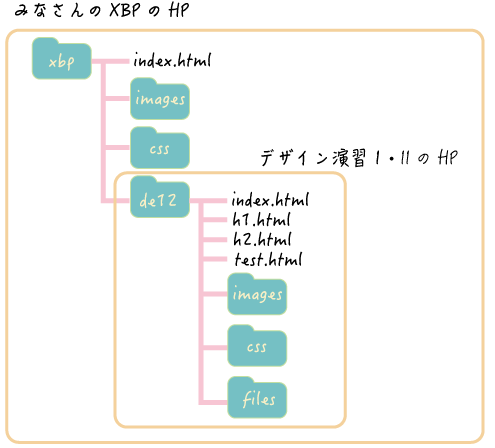

<!DOCTYPE html>
<html lang="jp">
<head>
    <meta charset="UTF-8">
    <title>html_2</title>
    <link rel="stylesheet" href="css/style.css">
    <link rel="shortcut icon" href="images/xbp.ico">
</head>
<body>
    <logotohome>
    <a href="../index.html"></a>
    </logotohome>

    
    <h1>1.XBP用のホームページを作成</h1>
        <h2>XBPのHPの構成</h2>
        <div>
            ブートキャンプでホームディレクトリの中にmygitフォルダを作り、その中にxbpフォルダを作りました。<br>
            デザイン演習Ⅰ・Ⅱフォルダ(de12)の中を編集していきます。<br><br>

            ■BootCampで作ったフォルダ<br>
            ホームディレクトリ<br>
            &emsp;&emsp;&emsp;&emsp;&emsp;&emsp;&emsp;&emsp;|---mygit<br>
            &emsp;&emsp;&emsp;&emsp;&emsp;&emsp;&emsp;&emsp;&emsp;&emsp;&emsp;|---xbp<br><br><br>
            
            
            
                        
            
        </div>
       

    <h1>２.テストページを編集してみる</h1>
    <div>test.htmlを編集していきます
        <h2>Work①文字を書く</h2>
            <div>
                ■Work①：test.htmlに文字を書いてLive Serverで確認してみましょう。(<a href="https://youtu.be/DpFo8xBrLMc">動画:Live Serverの使い方)</a><br><br>
                段落など、塊ごとにdivタグで括るようにして、文字を書いていきましょう。<br>
                divはdivision（分割）の略です。<br>
                <xmp>
                    <div>
                        ああああああ
                    </div>
                </xmp>
                改行はbrタグを使います。
                <xmp>
                    <div>
                        ああああああ<br>
                        12345678<br>
                        いいいいいい
                    </div>
                </xmp>
            </div>
            <h2>Work②画像の挿入</h2>
            <div>
                ■work②:test.htmlにimagesフォルダにあるtest.pngを挿入してみましょう<br><br>
                画像の表示にはimgタグを使います。（imageの略）<br>
                imgタグのsrcという属性にファイルパスを記載します。(srcはsourceの略です)<br>
                width属性は幅を設定します。%で指定するとスクリーンに対して何%の幅にするかを指定できます<br>
                【書き方】
                <xmp>
                    画像を表示(30%)<br>
                    <br>
                    画像を表示(40%)<br>
                    <br>
                </xmp>

            </div>
            <div>
            画像を表示(30%)<br>
            <br>
            画像を表示(40%)<br>
            <br>
            
            </div>
            <h3>画像サイズに関する注意</h3>
            <diV>
                スマホやデジカメで撮影した写真は綺麗に印刷できるように、すごく解像度が高く、サイズが大きくなっています。<br>
                しかし、HPで表示するにはそれほどの大きなサイズは必要なく、むしろサイズが大きいと表示に時間がかかります。<br>
                今後写真をGitHubにプッシュする場合は写真のサイズを1MB(1024KB)以下に落としてください。<br>
                Macでの写真サイズの変更方法(<a href="https://doyodoyo.github.io/doyolab/03photomemo.html" target="_blank">doyolab</a>)<br>
                Windowsでの写真サイズの変更方法(<a href="https://office-hack.com/windows/windows10-image-resize/" target="_blank">外部サイト</a>)

            </diV>

            <h2>Work③箇条書き</h2>

            <div>
                ■work③:test.htmlに何か箇条書きをしてみましょう<br><br>
                番号付きの箇条書きはolタグ(ordered listの略です)<br>
                各項目はliタグで括ります（listの略です)<br>
                【書き方】
                <xmp>
                    <ol>
                        <li>ああああああ</li>
                        <li>いいいいいい</li>
                    </ol>
                </xmp>
                【結果】
                <ol>
                    <li>ああああああ</li>
                    <li>いいいいいい</li>
                </ol>
            </div>
            <div>
                番号なしの箇条書きはulタグ(Unordered listの略です)
                【書き方】
                <xmp>
                    <ul>
                        <li>あああああ</li>
                        <li>いいいいいいい</li>
                    </ul>
                </xmp>
                【結果】
                <ul>
                    <li>あああああ</li>
                    <li>いいいいいいい</li>
                </ul>

            </div>
            <h2>Work④リンク</h2>
            <div>
                ■work④:test.htmlにリンクを作成してみましょう。<br><br>
                リンクを作りたい時はaタグを使います(Anchorの略です)<br>
                href属性にリンク先を記載します(hypertext referenceの略です)<br>
                target属性に_blankを設定すると新しいタブでリンクが開きます。設定しないと、同じタブ<br>
                【書き方】
                <xmp>
                    <a href="index.html">デザイン演習Ⅰ・Ⅱトップページ</a><br>
                    <a href="../index.html">XBPトップページ</a><br>
                    <a href="https://www.yahoo.co.jp/" target="_blank">Yahoo</a><br>
                    <a href="files/test.pdf" target="_blank">pdfファイル</a>

                </xmp>
                【結果】<br>
                <a href="index.html">デザイン演習Ⅰ・Ⅱトップページ</a>→同じ階層（フォルダ）にあるindex.htmlに移動<br>
                <a href="../index.html">XBPトップページ</a>→「../」はひとつ上の階層を意味する。<br>
                <a href="https://www.yahoo.co.jp/" target="_blank">Yahoo</a>→新しいタブでyahooを開く<br>
                <a href="files/test.pdf" target="_blank">pdfファイル</a>→filesフォルダのtest.pdfを新しいタブで開く<br>
            </div>
            <h3>外部サイトに関して</h3>
            <div>
                外部サイトにリンクを貼る場合は自分のサイトではないことを、明記しましょう。
            </div>
            <h3>動画に関して</h3>
            <div>
            動画ファイルは重いので、絶対にGitHubにプッシュしないでください。最悪、リポジトリが壊れます。<br>
            動画を表示したい場合は、動画をYouTubeにアップして、そこにリンクを貼るか、htmlに埋め込むコードを発行して、htmlファイルに貼り付けましょう。<br>
            参考：<a href="https://support.google.com/youtube/answer/171780?hl=ja" target="_blank">YouTubeヘルプ</a>
            </div>
            <h2>Work⑤タイトル</h2>
            <div>
                ■work⑤:test.htmlのheadの部分のtitleを自分なりのタイトルに変更してみましょう。<br><br>
                【書き方】
                <xmp>
                    <title>XBPのページ</title>
                </xmp>
                【結果】
                ブラウザのタブの表示を確認してください。
            </div>

            <h2>Work⑥スタイルシートの設定</h2>
            <div>
                <br>cssファイルはhtmlのいろんな書式を決めておいて、それを読み込めばタグごとの書式が反映されるファイルです。<br>
                ■work⑥:headの部分でcssフォルダにあるstyle.cssをスタイルシートに設定してみましょう。<br><br>
                h1.htmlからある行をコピペしてくればOKです<br>
                
                <br>スタイルシートの読み込みがうまくいけば、test.htmlの背景や右側の余白が整うはずです。
                <br><br>
                <xmp>
                    <link rel="stylesheet" href="css/style.css">
                </xmp>
                【結果】
                背景や右側の余白が整うはずです。
            </div>

            <h2>宿題</h2>
            <div>
                次回授業までの宿題<br>
                ■1.htmlというファイルを作ってください（test.htmlをコピーすると簡単です。)<br>
                ■1.htmlに一回目の授業のポイントを画像やリンクなどを交えて、自分なりにできるだけ詳細&良いデザインでまとめてください。<br>
                （やったことは必ず忘れるので、自分で見返してわかるように）<br>
                ■de12フォルダの直下にあるindex.htmlの演習ノートの下に番号なし箇条書きで、「第1回」と記述し、1.htmlにリンクさせてください。<br>
                
                イメージはこのような感じです。<br>
                <iframe width="560" height="315" src="https://www.youtube.com/embed/QmtEP_GOFp0" title="YouTube video player" frameborder="0" allow="accelerometer; autoplay; clipboard-write; encrypted-media; gyroscope; picture-in-picture" allowfullscreen></iframe>
                <br><br>
                ■GitHubにプッシュしてください。<br>

                ■余裕のある人は、インターネットなどを調べてデザインを自分なりのものに変更してみてください。<br>
                ただし、みなさんの課題を見つけられなくなるので、デザイン演習Ⅰ・Ⅱのトップページは今回の宿題のような箇条書きで各回のページに飛ぶようにしてください。<br>
                皆さんのまとめたものを見つけられないと成績をつけられません。
            </div>

    </div>
    
<br>
<br>


</body>
</html>